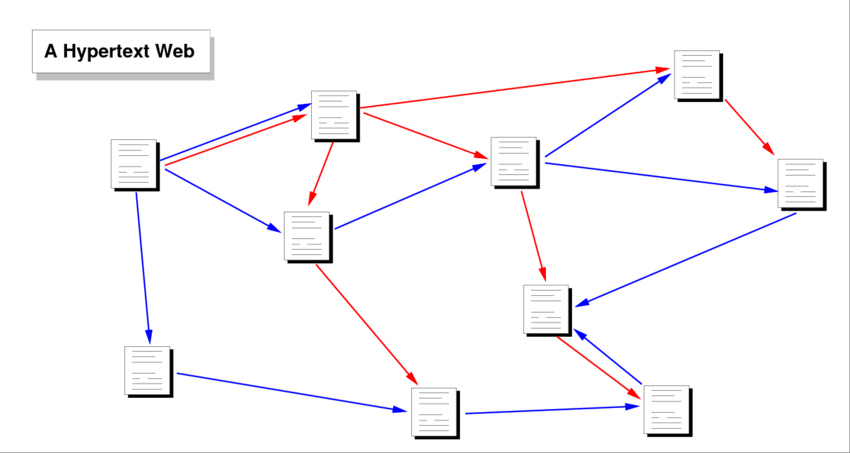

Hypertext
> "The idea of the Web was prompted [>] by positive experience of a small “home-brew”[+] “beer that someone makes at home” [©: Cambridge Dictionary (2022). University Press] personal hypertext system [❑]  [❑] Figure 2. The Architecture of a Massively Distributed Hypermedia System - Scientific Figure. ResearchGate. used for keeping track of personal information[+] “a type of computer software with which you organize your time, record the times of meetings, keep addresses, etc.” [©: Cambridge Dictionary (2022). University Press] on a distributed project." [©:2] [©:2] The World Wide Web — Tim Berners-Lee, Robert Cailliau, Ari Loutonen, Henrik Frystyk Nielsen, and Arthur Secret, 1994
> "The model of hypertext with text input has proved sufficiently powerful to express all the user interfaces[+] “the way in which the information on a computer, phone, etc. and instructions on how to use it are arranged on the screen and shown to the user” [©: Cambridge Dictionary (2022). University Press] , while being sufficiently simple to require no training for a computer user [<] [©:2] [©:2] The World Wide Web — Tim Berners-Lee, Robert Cailliau, Ari Loutonen, Henrik Frystyk Nielsen, and Arthur Secret, 1994
> As hypertext information is transmitted on the network[+] “a large system consisting of many similar parts that are connected together to allow movement or communication between or along the parts, or between the parts and a control centre” [©: Cambridge Dictionary (2022). University Press] in logical (mark-up) form, each client can interpret this in a way natural for the given platform, making optimal use of fonts, colors, and other human interface resources available on that platform." [©:2] [©:2] The World Wide Web — Tim Berners-Lee, Robert Cailliau, Ari Loutonen, Henrik Frystyk Nielsen, and Arthur Secret, 1994